遊びで植物を育てよう
2024/07/06
紫陽花の花が焼けてカッコいいです。
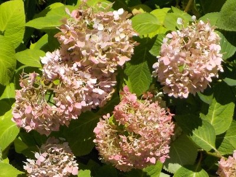
このアジサイは花が終わると赤くなります。更に夏の日差しで焼けてチリチリです。
メラメラと熱そうな感じしていいです。もうちょっと花を楽しみます。
【アジサイTOP】
【木TOP】
【園芸TOP】
2024/07/01
銀河がキレイな色になりました。
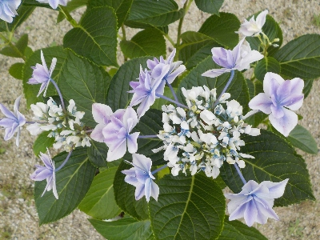
色が濃くなりました。
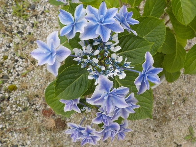
同じ土を使いましたが、こっちは配合が違ったみたいで青が鮮やかです。
両方ともとってもキレイ。
【アジサイTOP】
【木TOP】
【園芸TOP】
2024/06/16
まだ色が薄いですが、銀河が見頃になりました。
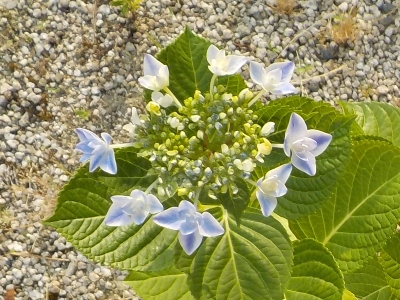
園芸店やよそのお宅でいろんな種類のアジサイが咲いてて、いいなーと思いながら見ています。
でも我が家は今ある種類だけでいいと思ってます。
【アジサイTOP】
【木TOP】
【園芸TOP】
2024/06/01
青いアジサイと赤いアジサイ。
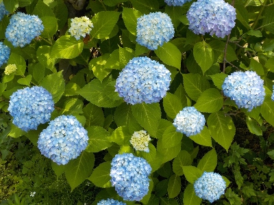
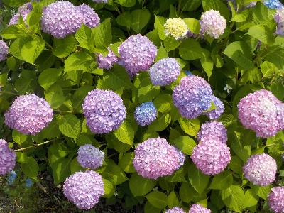
両方とも同じ木から挿し木で増やしたものです。植えてある場所は10mも離れていないですが、花色が違います。
庭の土って成分が同じじゃないんですね。
【アジサイTOP】
【木TOP】
【園芸TOP】
2024/05/26
地植えのアジサイが萎れました。
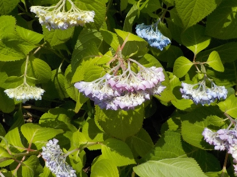
昨日は元気よく咲いていましたが、今日は天気が良かったのでぐったりです。
雨が降って欲しいです。
【アジサイTOP】
【木TOP】
【園芸TOP】
2024/05/25
早く咲くタイプのアジサイが色付き始めました。
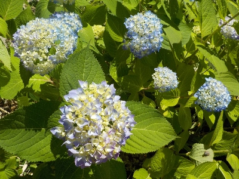
色付き始めの淡い色もいいですね。
【アジサイTOP】
【木TOP】
【園芸TOP】
2024/04/21
アジサイの花が沢山見れそうです。
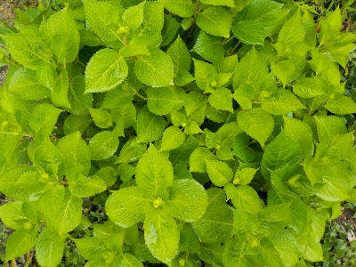
花の小さいのが沢山出来てます。あと1月くらいしたら花だらけになりそうです。
【アジサイTOP】
【木TOP】
【園芸TOP】
2024/01/04
鉢植えアジサイの植替えをしました。
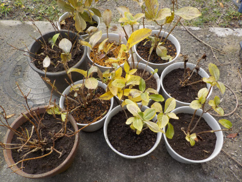
以前はフリージアを一緒に植えていましたが、フリージアは地植えの方が好きなので鉢植えは止めました。
植替えが簡単になったので、毎年植替えしようかな。
【アジサイTOP】
【木TOP】
【園芸TOP】
2023/08/27
夏のアジサイはユニークな形が多いです。

一つの花の塊ですが、分裂しています。
こういう品種のアジサイがあったら面白くていいですね。
【アジサイTOP】
【木TOP】
【園芸TOP】
2023/07/06
平日の夕方にアジサイの剪定をしました。
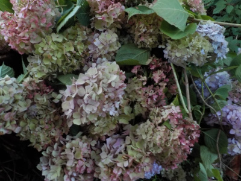
雨が降ったり他の事したかったりで、なかなかアジサイの花が切れなかったので、仕事帰りに剪定しました。
大量に切ってコンパクトにしました。スッキリしました。
【アジサイTOP】
【木TOP】
【園芸TOP】
2023/06/24
時間があったら霧島の恵の花を切ろうと思います。
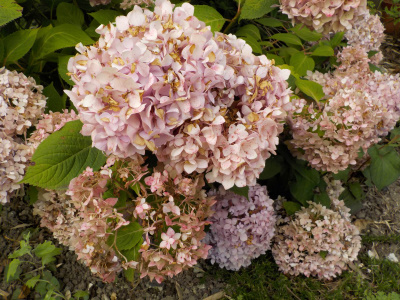
霧島の恵は花がだいぶ茶色くなりました。
近いうちに切り取った方がいいですね。
【アジサイTOP】
【木TOP】
【園芸TOP】
2023/06/22
銀河がキレイに咲きました。
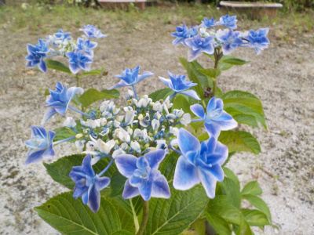
株が大きくなったせいか、大きな花が咲きました。でもなんか株が大きいと花と花の間隔が広いし、ガクとガクの間も広いので銀河っぽくないです。
この鉢は花が3個ありますが、もう2個か3個追加であったらもっと派手になるんだろうな。
来年は枝が増えて花数が倍になって欲しいです。
【アジサイTOP】
【木TOP】
【園芸TOP】
2023/05/28
このアジサイは今が見頃です。
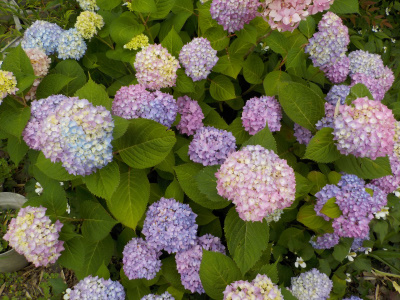
霧島の恵が見頃になりました。
花の大きさは小さいですが、数が多くていいです。
【アジサイTOP】
【木TOP】
【園芸TOP】
2023/04/15
アジサイがピンク色になりました。
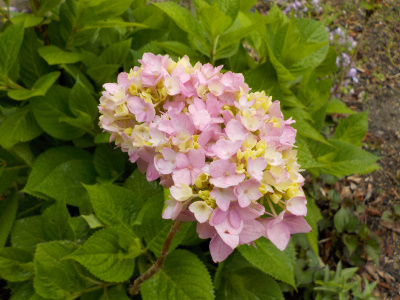
今の時期にしては花が大きいです。
今年も温暖化で暖かかったからかな。夏の酷暑が怖いですね。
【アジサイTOP】
【木TOP】
【園芸TOP】
2022/08/21
夏のアジサイが咲きました。
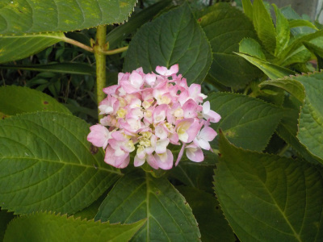
小さくて可愛いアジサイの花が咲きました。
他にも咲いていますが、これが一番形が良かったです。
【アジサイTOP】
【木TOP】
【園芸TOP】
過去の記事
2022/07/24
アジサイの花柄を一部取りました。
2022/07/05
アジサイ銀河は水やり不足でいまいちでした。
2022/06/03
霧島の恵が見頃になりました。
2022/05/08
母の日のアジサイ。
2022/05/05
鉢植えのアジサイが萎れていました。
2022/04/17
アジサイがこれから色づきます。
2021/11/13
アジサイの植替え
2021/09/25
秋のアジサイ開花
2021/08/22
アジサイに小さい花が一つ咲いています。
2021/07/23
アジサイの挿し木をしました。
【アジサイTOP】
【木TOP】
【園芸TOP】
2021/06/26
アジサイの花柄を取りました。
2021/05/23
アジサイに色がつきました。
2021/04/24
アジサイの花の元が出来ました。
2021/02/13
軒下のアジサイに芽が出ました。
2020/12/27
アジサイの土を入れ替えました。
2020/06/07
アジサイの色が綺麗になってきました。
2020/04/25
とっても早い時期にアジサイが咲いていました。
2020/03/01
アジサイに小さなブツブツがいっぱいありました。
2019/12/22
アジサイをウールマットに植えました。
2019/12/15
アジサイを地に植え替えしました。
【アジサイTOP】 【木TOP】 【園芸TOP】
2019/10/20
今年最後のアジサイかな？
2019/09/23
アジサイの蕾が出来ました。
2019/08/25
アジサイに小さい花がつきました。
2019/06/16
昔ながらのアジサイが色づき出しました。
2019/06/02
霧島の恵みは今が見頃です。
2019/05/12
母の日のアジサイ
2019/04/21
紫陽花に小さい花が付きました。
2019/03/09
アジサイの挿し木を鉢に植え替えました。
2018/12/24
アジサイの植え替えをしました。
2018/10/07
今年は四季咲きアジサイが1回しか咲きませんでした。
【アジサイTOP】 【木TOP】 【園芸TOP】
2018/06/10
今年最初のアジサイの挿し木
2018/06/02
アジサイがしおれていました。
2018/05/26
挿し木のアジサイを鉢植えにしました。
2018/05/19
挿し木したアジサイに花がつきました。
2018/05/13
母の日のアジサイ
2018/04/07
アジサイの花がもうできていました。
2018/04/01
挿し木したアジサイの花から新芽がでました。
2018/03/11
アジサイの芽がふくらんできました。
2018/01/28
アジサイに新しい芽が出ています。
2017/09/24
霧島の恵 ４輪目です。
2017/08/26
アジサイに２回目の花が咲きました。
2017/07/23
アジサイに新しい花かな？
2017/06/25
アジサイの花を摘み取りました。
2017/06/10
紫陽花の花が終わって紫になりました。
2017/05/14
霧島の恵を買いました。
【アジサイTOP】
【木TOP】
【園芸TOP】
アジサイは簡単に増えて楽しい。でも植える場所がない。
【おいしいものを食べよう。】【たくさん寝よう。】
【ソロ活をしよう!】【季節感のあることをしよう。】【動画視聴はほどほどに。】【当サイトの全てのコンテンツは無断転載禁止です。】